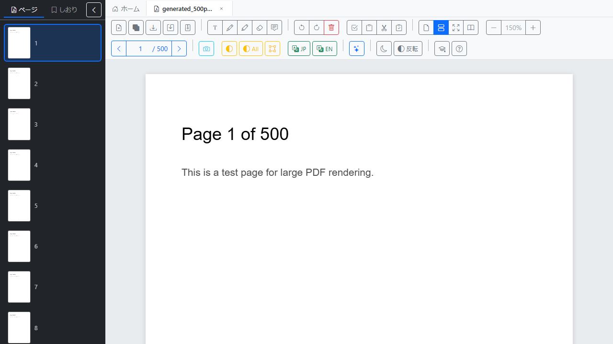
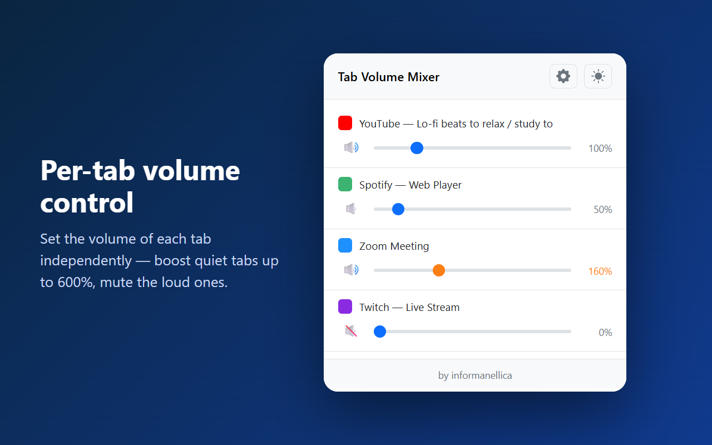
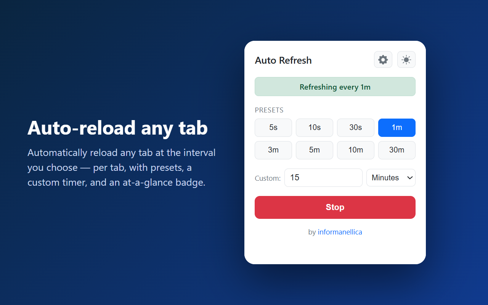

公開中のフリーソフトの一覧です。最新版のダウンロード、オンラインマニュアル、更新履歴へのリンクをまとめています。

スキャンPDFの編集に向いた、ブラウザ技術ベースの軽量 PDF エディタ。 二値化・傾き補正・OCR・ページ並べ替え・結合などを 1 アプリで完結。

ブラウザのタブごとに音量を個別調整。小さい音は最大 600% までブースト、 大きい音は下げる／ミュート。ひとつのミキサーでまとめて操作できます。

指定した間隔でタブを自動再読み込み。タブごとに設定でき、 プリセット・カスタム間隔・ひと目で分かるバッジ付き。
邪魔なキーボードショートカットを個別にオン／オフ。誤操作の Ctrl+W、 Backspace での戻る、F12 などをブロックできます。